A good dancer can dance with anyone, any time, to any song, which is why we believe in developing well-rounded dancers. Fortunately, we have a great system of interrelated teaching that makes learning to dance to multiple styles Fun, Quick, and Easy ®.
With so many dances to choose from, there is a dance for everybody! Check out the dances below to learn a little more about the different styles we teach and what makes each dance unique!
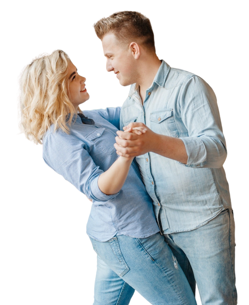
Latin Club
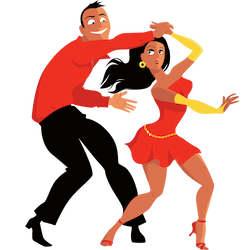
Salsa
Known for its fast-paced tempo and spins, this quintessential Latin dance is often seen at clubs, family parties, and anytime there is Latin music. As Salsa differs in style across the world (i.e., LA style, Casino Style, Cumbia) we stay up-to-date on differing trends so that, no matter where you go, you can dance. Artists like Marc Anthony and Celia Cruz have made this dance a staple.
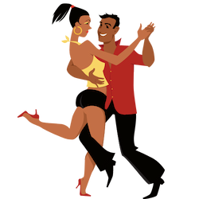
Bachata
This dance, originally from the Dominican Republic, has swept its way through the world and is often viewed in Salsa clubs as the “slow dance”. Although most commonly danced to artists like Aventura and Prince Royce, the Bachata is a great party dance that can also be done to most Top 40 and Rock ‘n Roll music.
Merengue
The ultimate party dance, Merengue was said to be invented in the Domincan Republic by General Maringie, who returned from war and danced on an injured leg. The Merengue is the a latin dance that can be picked up quickly and is great for popular songs with a strong consistent beat such as Pitbull’s “Fireball” and Elvis Crespo’s “Suavemente”.
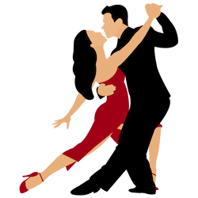
Argentine Tango
Originating in Buenos Aires, Tango is the romantic icon for passion, intensity, and skill. Including the styles of Argentine Tango, Tango Vals & Milonga, these dances are great for learning beautiful foot and leg action and great lead and follow skills. Films such as 'Scent of a Woman' and 'True Lies' feature this beautiful style.
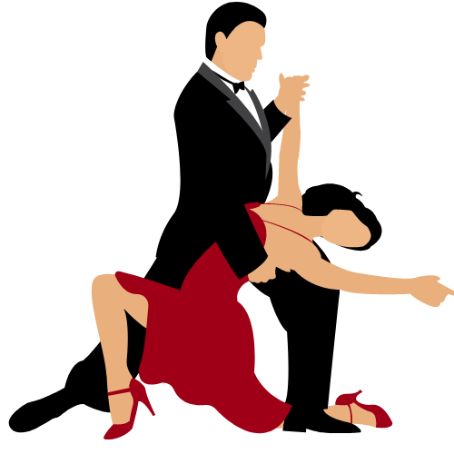
Tango Vals
Taking inspiration from the waltzes of Vienna, Tango musicians
began around 1910 to compose songs with a swaying 3/4 rhythm. The
Tango Vals is accompanied by a strong underlying pulse and
exciting musical rhythms. Dancers incorporate sweeping elegant
movements, inspired by the Viennese Waltz. With a basic knowledge
of Argentine Tango, newcomer Tango Vals dancers can have fun with
classic Tango patterns, such as Salida and Ochos.
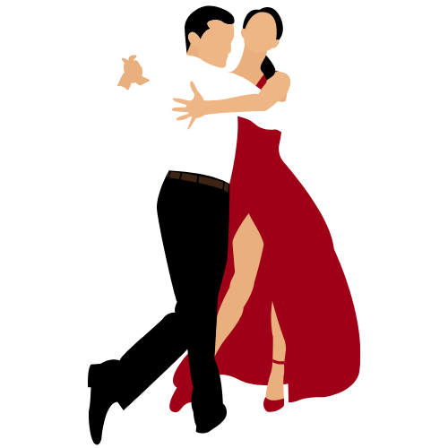
Milonga
Milonga is a term used for both a social tango gathering, as well
as the faster version of the Tango itself. With lightning-fast
footwork and playful movements, advanced Milonga dancers put the
thrilling musical rhythm at center stage. Beginners can enjoy the
Milonga by simply walking to the beat of the music!
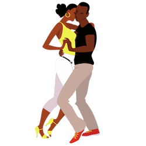
Zouk
The latest Latin dance craze, this Brazilian social dance is full of body rolls, dynamic rhythms, and tilted turns. Recently, Zouk has incorporated R’n’B, pop, and Hip Hop music and is a great dance for creativity and improvisation. From traditional sounding Zouk songs like Jocelyne Labylle’s “J’ai déposé les clés” to more contemporary R’n’B style like Beyoncé’s “Partition”, Zouk dancers have quite an array of music choices.
Latin Comp
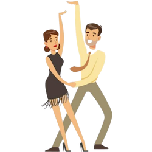
Cha Cha
Originally called the Triple Mambo, the Cha Cha first became popular in the 1950s. This fun, carefree dance is still one of the most popular Latin dances today. With its characteristic “two-three cha-cha-cha” rhythm, the Cha Cha can be danced to a variety of music from Santana to Michael Jackson and everything in between.
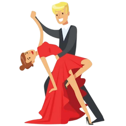
Rumba
Often referred to as “the kitchen dance”, as it takes up so little room you can dance it in your kitchen, the Rumba is the ultimate slow dance. Famous for its Latin hip movements, called Cuban Motion, it's idealized for its romantic look and feel. The Rumba is the perfect slow dance everyone can enjoy. Examples of Rumba songs include “Besame Mucho” and “Can’t Take My Eyes Off Of You”.
Mambo
The foundation of Salsa and Cha Cha, the Mambo remains a popular Latin dance for those who love a challenge. This dance had its beginnings in the 1940s when American Jazz and Afro-cuban beats combined. The mambo is seen in famous films such as 'Dirty Dancing' and 'West Side Story'.
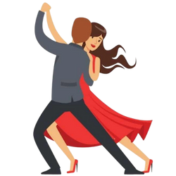
Bolero
Slower than the rumba, Bolero is a very smooth, sophisticated dance. It teaches good balance, strong leg lines, and a great attention to your partner. Perhaps the most intimate of the latin dances, Bolero is a great challenge for taking your dancing to the next level. Popular Bolero songs include Celine Dion’s “Falling Into You” and Paul Carrack’s “Satisfy My Soul”.
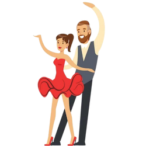
Samba
Made famous by Carmen Miranda, the Samba is often referred to as the “Brazilian Waltz”. This fun, upbeat dance is excellent exercise. It’s great for tightening up the core and learning different rhythms. Famous Sambas include Sergio Mendes “Magalenha” and Madonna’s “La Isla Bonita”. If you’re looking for a street style Samba, we also offer lessons in Samba de Gafieira.
Ballroom
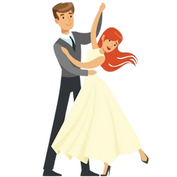
Waltz
Considered the mother of all ballroom dances, Waltz is a timeless dance featuring the classic “box” step. Danced to music in ¾ time, the Waltz is an elegant dance to enjoy at any occasion. Famous Waltz songs include Journey’s “Open Arms” and Norah Jones’ “Come Away With Me”.
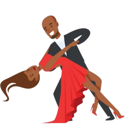
Tango
Known as the "Dancer's Dance," Tango features the intensity and the romance of a lover's quarrel. Whether you're looking to learn international or american style, this dance teaches posture, frame, and strong lead and follow. You may find Tango danced most commonly in competitive ballrooms around the world.
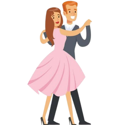
Foxtrot
Danced most commonly to Jazz standards and Big Band music, the Foxtrot is a great dance for beginners. Its moderate pace allows for easy conversation and a great social dance for weddings and cruises. Notable artists include Frank Sinatra, Harry Connick Jr., and Michael Bublé.
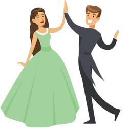
Viennese Waltz
The most romantic of all the ballroom styles, the Viennese Waltz originated in Vienna, Austria. It’s fast, whirling movements make it the picture of elegance as dancers move gracefully across the floor. While commonly danced in competition to the music style of Johann Strauss, some of the most famous love ballads such as Whitney Houston’s “I Have Nothing” are Viennese Waltzes.
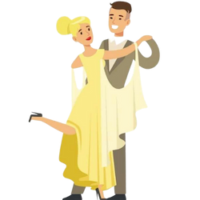
Quickstep
This fast-paced, ballroom dance features hops, skips, and runs down the floor without ever leaving a dance hold. While most commonly done for show or competition, the Quickstep is a great dance for exercise and agility. Famous songs include Bobby Darin's “I’m Sittin’ On Top Of The World” and Nat King Cole's “Let’s Face The Music And Dance”.
Swing
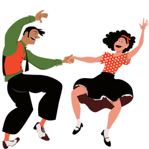
East Coast Swing
Sometimes known as the Jitterbug, the Swing is one of the most popular American dances. With its single, double, and triple-time rhythms, the Swing is highly versatile across decades of music. It can be danced to anything from Glenn Miller's “In the Mood” to Bob Seger’s “Old Time Rock n Roll”, from Wham!’s “Wake Me Up Before You Go-Go” to Meghan Trainor’s “All About That Bass”.
West Coast Swing
Differing from the high-energy, highly-rotational, and bouncy East Coast Swing, the West Coast Swing is a slinky slot-style dance. While music for this style can vary greatly, it is traditionally danced to rock ‘n roll in more of a Blues style. The West Coast Swing is great for learning connections, improvisation, and musical expression.
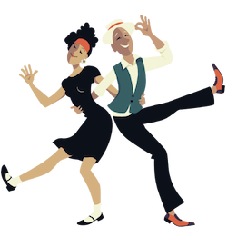
Lindy Hop
Including styles of Lindy, Charleston, Shag, and Balboa, the Lindy Hop is the classic Swing dance that gets its name from the famous aviator Charles Lindbergh who “hopped the Atlantic.” This dance style is fun, fast-paced, and very athletic making it the ideal dance for exercise to Big Band music like Benny Goodman’s “Sing, Sing, Sing”.
Nightclub 2-Step
Although not developed until the 1980s, this social dance gained popularity among nightclubs across the country. Its relaxed hold and slow to medium tempo make it perfect for social occasions. Famous songs include Chris de Burgh’s “Lady In Red” and Rupert Holmes’ “Escape (The Piña Colada Song)”.
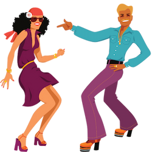
Hustle
Featured in movies like 'Saturday Night Fever' and 'Thank God It’s Friday', in the 1970s, disco became all the rage. Shortly after, a new form developed called “Touch Disco”, the partnered Hustle we know today. This high-energy dance features lots of spins, turns, and wraps and is not only danced to hits from the Bee Gees but today’s artists like Bruno Mars and Maroon 5.
Country Western
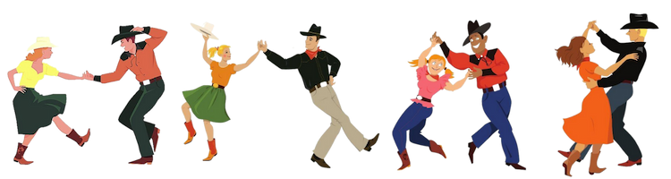
2-Step | 3-Step | Shuffle | Cha Cha | Swing | Waltz
While you're likely to have heard of the Country Two-Step, there are actually several types of Country Western dances that exist! One for each of the rhythms found in country music. Not only do we teach several styles of two-step including the Progressive, Texas, and Santa Fe, but we also teach Country Western Three-Step, Shuffle, Cha Cha, Swing, and Waltz. Whether you’d like to dance to legends like Johnny Cash and Willie Nelson to contemporaries like Darius Rucker and Carrie Underwood, we’ve got you covered!
Is there a dance you’re interested in that you don’t see above? Chances are we actually teach it! Reach out to us today and speak with one of our dance specialists.